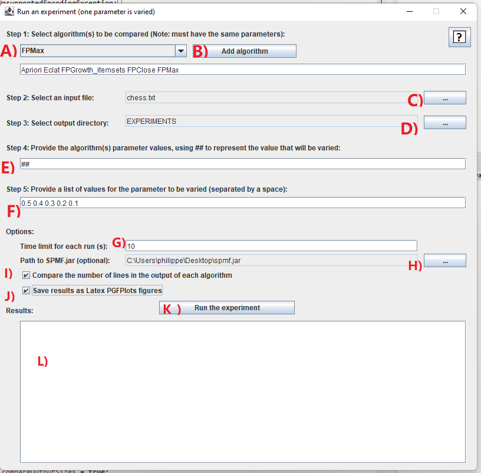
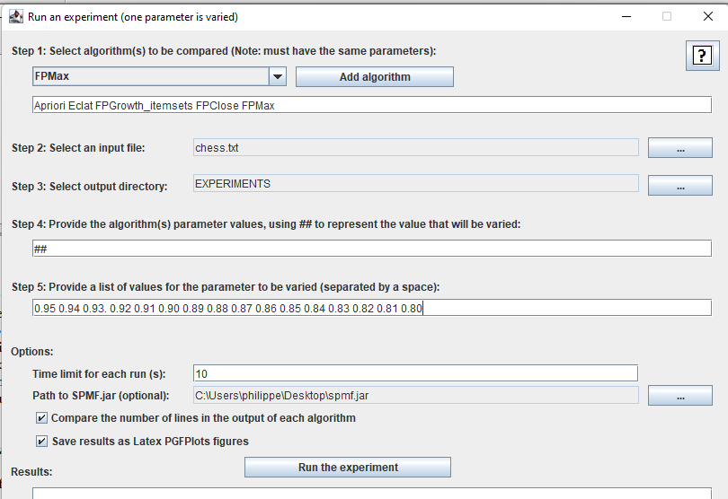
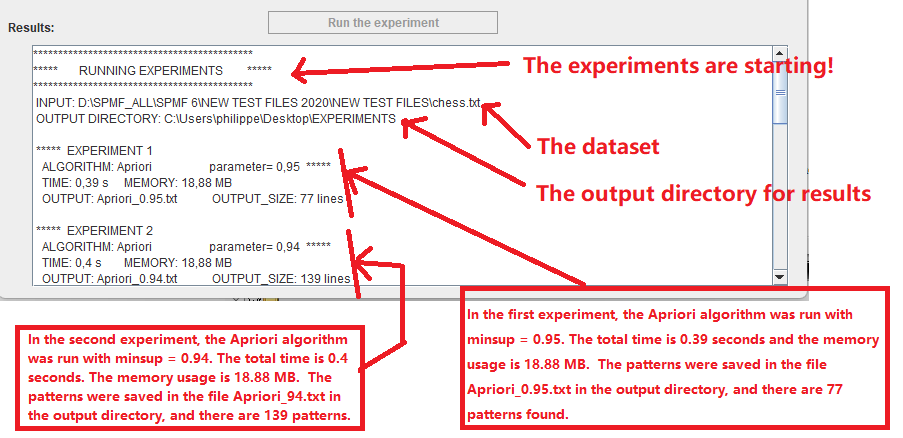
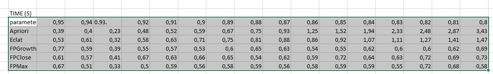
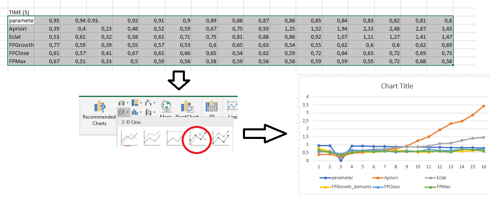
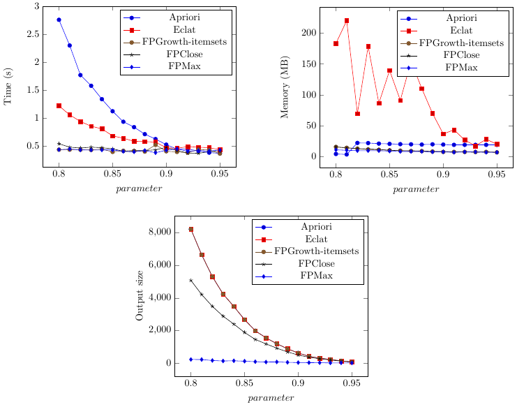
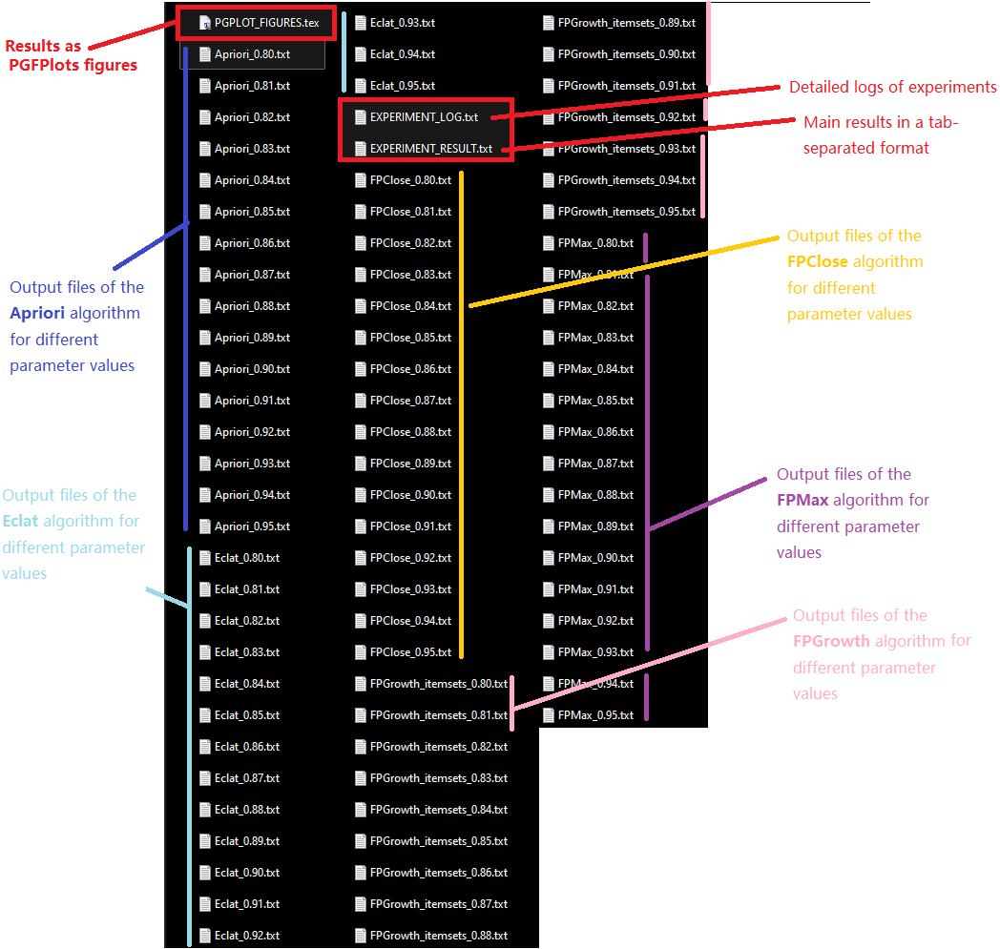

Run experiments to compare the performance of one or more algorithms on a dataset (one parameter is varied) (SPMF documentation)
This example explains how to to use the ExperimenterForParameterChange tool of SPMF, which allows to compare the performance of one or more algorithms on a dataset, when a parameter is varied.
This tool runs algorithms automatically and save the results to files. The results include a comparison of runtime, memory usage and output file size. These results are in a tab-separated format, which can be easily imported into Excel or other spreadsheet software to draw charts.
There is also an option to output results as PGFPlots charts that can be inserted directly in Latex documents such as research papers. This tool is was designed to speed-up the redundant task of running experiments to compare algorithms when writing research papers.
I will first explain how to use this tool from the user interface of SPMF, and then how the main functionnalities can be used from the source code version of SPMF.
How to start this tool?
To run this example, if you are using the graphical user interface of SPMF, (1) select the algorithm "Performance_experiment_one_parameter_varied" and then (2) click "Run algorithm". This will open the tool, which provides a simple user interface..
Alternatively, if you want to run this tool from the source code of SPMF (e.g. in Eclipse), without using the graphical user interface of SPMF, you can execute the same tool by running the file "MainTestExperimenterForParameterChange", located in the package "ca.pfv.spmf.test". However, this is less user-friendly as there is no user interface. Thus, it is recommended to use the graphical user interface of SPMF.
How to use the tool?
After you run the algorithm "Performance_experiment_one_parameter_varied" in the user interface of SPMF, the following window will open, which let you indicate what kind of experiments should be run.

I will explain step-by-step how to use this tool:
- Step 1: it is necessary to choose the algorithms that you want to compare. In this example, we will select a few algorithms. For this, we will click on the combo-box A) and select the algorithm "Apriori", and then click on the button B) "Add algorithm". Then, we will repeat this step to also add the algorithms "Eclat", "FPGrowth_itemsets", "FPClose" and "FPMax". It is necessary to choose at least one algorithm. Besides, it is required that all algorithms have the same number of parameters. This is because it does not make sense to compare algorithms that do not have the same parameters. In this example, we select only frequent itemset mining algorithms because they all have a same parameter called "minsup" and we want to compare the performance of those algorithms. It is to be noted that some of these algorithms also have some optional parameters but it does not matter because we will not use them for these experiments.
- Step 2: We next need to select an input file on which we will run the algorithms to compare their performance. For this, you may use any datasets that is in the SPMF format. In this example, we will use the Chess.txt dataset, which can be downloaded from the dataset page of the SPMF website. After downloading the Chess dataset, we click on the button C) to select this dataset.
- Step 3: We need to select and output directory on our computer so that the results can be saved into that directory. Here, you may create a new directory called Experiments on your computer. Then, you can click on the button D) to select that directory.
- Step 4: We need to also provide the list of parameter values to be used as default values for the experiment. If we have multiple parameters, we need to give fixed values for all the parameters, except for the parameter that will be varied in the experiment. The parameter that is varied will be indicated by the value ##. For example, if you have two parameters, you may write 1.5 ## in the text field F) to indicate that the first parameter is fixed to 1.5 while the second parameter will be varied. In this example, we have only one parameter, so we will just write : ## in the text field F) to indicate that this parameter will be varied.
- Step 5: Then, we need to give a set of values for the parameter that is varied. In this example, we can use the values : 0.95 0.94 0.93 0.92 0.91 0.90 0.89 0.88 0.87 0.86 0.85 0.84 0.83 0.82 0.81 0.80 by typing this in the text field F).
- Step 6: After that, we can set some optional parameters.
In this example, we will do as follows:
- First, we will set a time limit of 10 seconds by typing 10 in the text field G). This will ensure that the algorithms will not run for more than 10 seconds each tim (otherwise they ill be terminated). This option is useful to ensure that the experiments do not take too much time.
- Second, we will click the checkbox I). This checkbox will make SPMF count the number of lines in the output of each algorithm. In other word, this will count the number of patterns generated by each algorithm in this example. If we don't check this option, the tool will only compare the memory usage and runtime. But by clicking this option, we have an additional comparison, which is the number of lines (patterns).
- Third, we will click the checkbox J) to also save the results as a PGFPlot that we can insert in Latex documents.
- By the way, there is also an option H). This option allows to use a specific version of the JAR file of SPMF (spmf.jar) for running the experiments. For this example, it is not necessary to do that. This option is mainly intended for debugging (for the developers of SPMF).
If you have followed the above instructions, the window will look like this:

Then, we can click on the "Run the experiment" button K) to start the experiments!
During the experiments, the status of experiments will be displayed in the text area L) as follows:

And finally, when all experiments are done, the results of the experiments will be displayed in the text area L) as follows:
********************************************
***** RESULTS *****
********************************************
INPUT FILE: D:\SPMF_ALL\SPMF 6\NEW TEST FILES 2020\NEW TEST FILES\chess.txt (the input file)
PARAMETERS: [##] (the parameter(s) used in this experiment)TIME (S)
parameter 0,95 0,94 0.93. 0,92 0,91 0,9 0,89 0,88 0,87 0,86 0,85 0,84 0,83 0,82 0,81 0,8
Apriori 0,39 0,4 0,23 0,48 0,52 0,59 0,67 0,75 0,93 1,25 1,52 1,94 2,33 2,48 2,87 3,43
Eclat 0,53 0,61 0,32 0,58 0,63 0,71 0,75 0,81 0,88 0,86 0,92 1,07 1,11 1,27 1,41 1,47
FPGrowth_itemsets 0,77 0,59 0,39 0,55 0,57 0,53 0,6 0,65 0,63 0,54 0,55 0,62 0,6 0,6 0,62 0,69
FPClose 0,61 0,57 0,41 0,67 0,63 0,66 0,65 0,54 0,62 0,59 0,72 0,64 0,63 0,72 0,69 0,73
FPMax 0,67 0,51 0,33 0,5 0,59 0,56 0,58 0,59 0,56 0,58 0,59 0,59 0,55 0,72 0,68 0,58(The above lines provide the results for the runtime comparison. The first line is the values of the varied parameter. The second line is the runtimes for Apriori for these parameter values. The following lines show the runtimes for the other algorithms, namely Eclat, FPGrowth, FPClose and FPMax, for these parameter values. For example, the second line means that Apriori took 0.39 seconds when the parameter was set to 0.95, and Apriori took 0.4 seconds when the parameter was set to 0.94, etc.)
MEMORY (MB)
parameter 0,95 0,94 0.93. 0,92 0,91 0,9 0,89 0,88 0,87 0,86 0,85 0,84 0,83 0,82 0,81 0,8
Apriori 18,88 18,88 18,88 18,88 18,88 19,32 19,76 19,76 19,76 20 20,44 21,32 21,32 22 3,34 3,36
Eclat 19,92 27,93 27,93 26,76 11,96 38,9 72,43 110,26 154,03 94,25 141,23 91,27 176,8 71,23 15,29 172,98
FPGrowth_itemsets 6,75 7,43 7,43 7,43 7,44 7,44 8,11 8,1 8,78 9,44 10,1 10,77 11,44 12,78 14,12 15,45
FPClose 6,76 7,43 7,43 7,43 7,43 7,43 8,1 8,77 8,76 9,43 10,1 11,43 12,11 12,1 13,45 15,45
FPMax 6,76 7,44 7,44 7,42 7,43 7,43 7,44 7,43 8,1 8,1 8,77 9,44 9,43 9,44 10,11 10,78(The above lines provide the results for the memory comparison. The first line is the values of the varied parameter. The second line is the maximum memory usage for Apriori for these parameter values. The following lines show the maximum memory usage for the other algorithms, namely Eclat, FPGrowth, FPClose and FPMax, for these parameter values. For example, the second line means that Apriori used 18.88 megabytes of memory when the parameter was set to 0.95, and Apriori took also 18.88 megabytes of memory when the parameter was set to 0.94, etc.)
OUTPUT_SIZE (LINES)
parameter 0,95 0,94 0.93. 0,92 0,91 0,9 0,89 0,88 0,87 0,86 0,85 0,84 0,83 0,82 0,81 0,8
Apriori 77 139 -1 305 421 622 883 1195 1553 1987 2669 3484 4243 5312 6656 8227
Eclat 77 139 -1 305 421 622 883 1195 1553 1987 2669 3484 4243 5312 6656 8227
FPGrowth_itemsets 77 139 -1 305 421 622 883 1195 1553 1987 2669 3484 4243 5312 6656 8227
FPClose 73 124 -1 269 362 498 689 922 1183 1457 1885 2400 2883 3487 4216 5083
FPMax 11 18 -1 26 30 34 51 75 69 89 119 145 133 163 221 226(The above lines compares the output size of the algorithms when the parameter is varied. The first line is the values of the varied parameter. The second line is the output size (here, number of patterns) for Apriori for these parameter values. The following lines show the output sizes for the other algorithms, namely Eclat, FPGrowth, FPClose and FPMax, for these parameter values. For example, the second line means that Apriori found 77 patterns when the parameter was set to 0.95, and Apriori found 139 patterns when the parameter was set to 0.94, etc.)
All the above results are also saved in a file called EXPERIMENT_RESULT.txt in the output directory.
Importing the results into Excel
The results from the file EXPERIMENT_RESULT.txt are tab-separated. This means that they can be easily imported into Excel to create charts. For this, just copy the above results into Excel. For example, here we copy the runtime results:

Then, we can select these results to generate charts:

As can be seen in this picture, this chart is not perfect. In particular, the X axis is incorrect. This can be fixed by right-clicking on the chart in Excel and choosing "Select data" to set up the X axis properly. Besides, it is possible to adjust other aspects of the chart to make it look more pretty.
Importing the results into a Latex document
If you have selected the option to generate a latex file with PGFplot, a file called PGPLOT_FIGURES.tex will have been created in the output directory. This file can be compiled using Latex to generate charts, which can also be included in latex documents.
In the above example, the following charts have been created automatically:

The Result Files
After running experiments, a set of files are created in the output directory. Here is an overview of those files.
- EXPERIMENT_RESULT.txt : contains the main results from the experiments in a tab-separated format
- PGPLOT_FIGURES.txt : contains the latex charts for the experiment (if you have selected the option of generating PGFPlots figures)
- EXPERIMENT_LOG.txt : This files contains a detailed log about all the experiments that have been run. This is useful if you want to find more information about the experiments besides the main results.
- other files: The output of each algorithm for each experiment is saved in a distinct file. For example, in the above example, a file Apriori_0.80.txt contains the results of the Apriori algorithm when it is run with minsup = 0.8, another file Apriori_0.81.txt contains the results of the Apriori algorithm when it is run with minsup = 0.81, and so on.
Here is an overview of all the files created in the output directory for this example:

How to run experiments from the source code of SPMF?
Above, I have explained how to use the graphical interface of SPMF to run automated performance experiments. I will now explain how the same functionnality can be used from the source code of SPMF. This is suited for those who are familiar with Java and wish for example to run experiments without passing through the graphical user interface of SPMF.
There is an example of how to do this, in the SPMF source code. It is the file MainTestExperimenterForParameterChange, which is located in the package ca.pfv.spmf.experiments.oneparametervaried of SPMF.
The main code from that example is shown below. In that example, we will run a performance comparison of two algorithms from SPMF called "FPGrowth_association_rules" and "Apriori_association_rules. The input file is the file "ContextPasquier99.txt", which is located in the same folder, and results of the experiments will be saved in a new folder called "EXPERIMENTS". To run the experiments, we indicate a path to the file spmf.jar on the local computer. This is because we will be calling the spmf.jar file to run the algorithms.. In this example, we assume that spmf.jar has been downloaded to the computer and saved in C://Users//Philippe/Desktop/spmf.jar but other location could work as well.
We will also indicate that there are two parameters for those algorithms and that the first one will be varied using the special code : ##
and that the second parameter will be fixed to 0.6. Then we will indicate that the first parameter will be varied using the values 0.01, 0.02, 0.03, 0.04, and 0.05. We will also indicate that each algorithm cannot run for more than 100000 s. We can also set additional options such as to generate PGFPlots figures to be used with Latex.
The important part of the code for this example is below:
// The input file String inputFile = fileToPath("contextPasquier99.txt");
// The directory where results from the experiments will be stored.
String outputDirectory = "EXPERIMENTS";
// Create the tool to run experiment ExperimenterForParameterChange experimenter = new ExperimenterForParameterChange(); // Here we must give a path to the spmf.jar file on your computer // If you did not download spmf.jar, you need to download it // from the download page on the SPMF website experimenter.setSPMFJarFilePath("C:\\\\Users\\\\philippe\\\\Desktop\\\\spmf.jar"); // We indicate that if an algorithm run out of time, // the result should be indicated using the "-" string experimenter.setTimeoutCodeS("-");
// A list of algorithm to be compared.
// They must have the same parameters
String algorithmNames[] = new String[] { "FPGrowth_association_rules", "Apriori_association_rules" };
// The default list of parameter values // The code ## should be used to indicate the parameter that will be varied // in the experiment. // Below, I have indicated that I want to vary the first parameter. String params[] = new String[] { "##", "0.6" }; // The values for the parameter that is varied // Below, it means that we will vary the first parameter using the // following values String varyingParameterValues[] = new String[] { "0.01", "0.02", "0.03", "0.04", "0.05" }; // The name of the varied parameter (just for printing purpose String variedParameterName = "minsup"; // The maximum time to run each algorithm // If an algorithm exceed that time limit, it will be stopped. int timeoutInMilliseconds = 100000; // If true, the output file sizes will be compared in the results boolean compareOutputSizes = true; // If true, the command for running each algorithm will be shown in // the console. This is useful for debugging but not very important. boolean showCommand = false; // If true, latex figures will be generated boolean latexFigures = true;
// Run the experiments.
experimenter.runAnAlgorithmAndVaryParameter(algorithmNames, params, varyingParameterValues, inputFile,
outputDirectory, timeoutInMilliseconds, compareOutputSizes, showCommand, latexFigures,variedParameterName);
If we run this example, the output in the console will be like this:
********************************************
***** RUNNING EXPERIMENTS *****
********************************************
INPUT: /D:/workspace/SPMF_2019_for_release/bin/ca/pfv/spmf/experiments/oneparametervaried/contextPasquier99.txt
OUTPUT DIRECTORY: EXPERIMENTS
***** EXPERIMENT 1
ALGORITHM: FPGrowth_association_rules minsup= 0,01 *****
TIME: 0,29 s MEMORY: 7,77 MB
OUTPUT: FPGrowth_association_rules_0.01.txt OUTPUT_SIZE: 42 lines
***** EXPERIMENT 2
ALGORITHM: FPGrowth_association_rules minsup= 0,02 *****
TIME: 0,26 s MEMORY: 7,77 MB
OUTPUT: FPGrowth_association_rules_0.02.txt OUTPUT_SIZE: 42 lines
***** EXPERIMENT 3
ALGORITHM: FPGrowth_association_rules minsup= 0,03 *****
TIME: 0,24 s MEMORY: 7,77 MB
OUTPUT: FPGrowth_association_rules_0.03.txt OUTPUT_SIZE: 42 lines
***** EXPERIMENT 4
ALGORITHM: FPGrowth_association_rules minsup= 0,04 *****
TIME: 0,27 s MEMORY: 7,77 MB
OUTPUT: FPGrowth_association_rules_0.04.txt OUTPUT_SIZE: 42 lines
***** EXPERIMENT 5
ALGORITHM: FPGrowth_association_rules minsup= 0,05 *****
TIME: 0,24 s MEMORY: 7,77 MB
OUTPUT: FPGrowth_association_rules_0.05.txt OUTPUT_SIZE: 42 lines
***** EXPERIMENT 6
ALGORITHM: Apriori_association_rules minsup= 0,01 *****
TIME: 0,26 s MEMORY: 7,76 MB
OUTPUT: Apriori_association_rules_0.01.txt OUTPUT_SIZE: 42 lines
***** EXPERIMENT 7
ALGORITHM: Apriori_association_rules minsup= 0,02 *****
TIME: 0,27 s MEMORY: 7,76 MB
OUTPUT: Apriori_association_rules_0.02.txt OUTPUT_SIZE: 42 lines
***** EXPERIMENT 8
ALGORITHM: Apriori_association_rules minsup= 0,03 *****
TIME: 0,28 s MEMORY: 7,76 MB
OUTPUT: Apriori_association_rules_0.03.txt OUTPUT_SIZE: 42 lines
***** EXPERIMENT 9
ALGORITHM: Apriori_association_rules minsup= 0,04 *****
TIME: 0,3 s MEMORY: 7,76 MB
OUTPUT: Apriori_association_rules_0.04.txt OUTPUT_SIZE: 42 lines
***** EXPERIMENT 10
ALGORITHM: Apriori_association_rules minsup= 0,05 *****
TIME: 0,32 s MEMORY: 7,76 MB
OUTPUT: Apriori_association_rules_0.05.txt OUTPUT_SIZE: 42 lines
********************************************
***** RESULTS *****
********************************************
INPUT FILE: /D:/workspace/SPMF_2019_for_release/bin/ca/pfv/spmf/experiments/oneparametervaried/contextPasquier99.txt
PARAMETERS: [##, 0.6]
TIME (S)
minsup 0,01 0,02 0,03 0,04 0,05
FPGrowth_association_rules 0,29 0,26 0,24 0,27 0,24
Apriori_association_rules 0,26 0,27 0,28 0,3 0,32
MEMORY (MB)
minsup 0,01 0,02 0,03 0,04 0,05
FPGrowth_association_rules 7,77 7,77 7,77 7,77 7,77
Apriori_association_rules 7,76 7,76 7,76 7,76 7,76
OUTPUT_SIZE (LINES)
minsup 0,01 0,02 0,03 0,04 0,05
FPGrowth_association_rules 42 42 42 42 42
Apriori_association_rules 42 42 42 42 42
If we want we can copy the above results in green color to Excel for generating charts from these results.
Besides, in the EXPERIMENTS/ directory that will have been created, we can find the detailed results in files, including figures to be used in Latex.
Now, having said that an interesting question is : What if I want to test some algorithms that are not in SPMF.jar ? At this moment, the tool is only designed to compare algorithms from SPMF.jar but it is not difficult to add new algorithms to SPMF.Jar. I will try to add more explanations about this in the future.